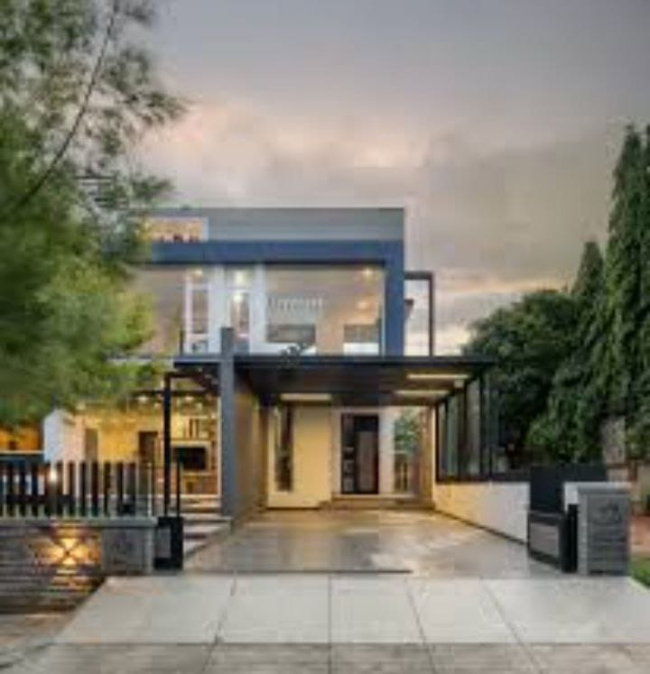

HOUSE DETAILS
Houses:
Houses are structures designed for human habitation, providing shelter, comfort, and a sense of belonging. They come in various styles, sizes, and architectural designs, reflecting the diversity of cultures and individual preferences. Typically, houses consist of rooms for different purposes such as living, sleeping, cooking, and bathing. They can be standalone units or part of larger residential complexes. The materials used in construction vary based on factors like location, climate, and available resources. Houses are not only functional spaces but also significant expressions of personal identity and lifestyle.
Some Types of houses:
Single-Family Homes:
Detached houses that stand alone and are designed for a single family.
Apartments/Condominiums:
Multi-unit buildings where individual living spaces are stacked or side by side. Condos are typically individually owned units within an apartment building.

Townhouses/Row Houses:
Homes that are attached in a row or a block, often sharing common walls.
Duplex/Triplex/Quadplex:
Houses divided into two, three, or four separate living units.

Tiny Houses:
Compact and often mobile houses designed for minimalistic living.